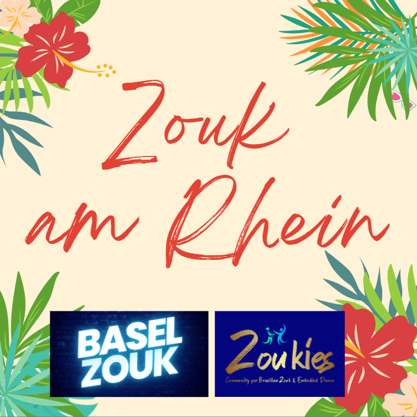
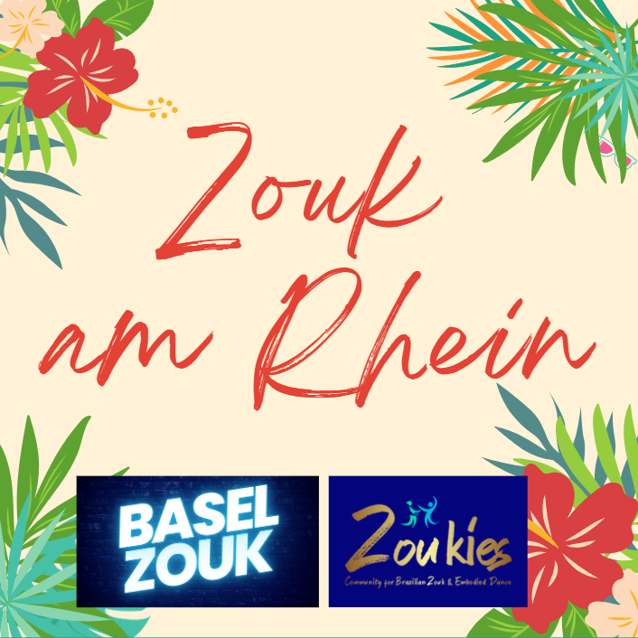

📅 *Upcoming parties in July*
🌍 *Basel*
• Zouk am Rhein (Fri, Jul 28)
🌍 *Genève*
• Forró Samba Zouk (Fridays)
🌍 *Zürich*
• Zouk Club (Thursdays)
• Zouk Out (Fridays)
Up to date calendar: http://parties.swisszouk.ch
parties. .ch
August
.ch
August
📅 *Upcoming parties in August*
🌍 *Basel*
• Zouk am Rhein (Fri, Aug 18)
• Tuesday (Petersplatz) (Tuesdays)
• Tuesday (Reconnecting Circles) (Tuesdays)
🌍 *Genève*
• Forró Samba Zouk (Fridays)
🌍 *Zürich*
• Bürklizouk (Sun, Aug 6)
• Lamba Night (Sun, Aug 13)
• Zouk Prime (Sat, Aug 19)
• Bürklizouk (Sun, Aug 20)
• Zouk Affair (Sun, Aug 27)
• Zouk Practica & BBQ (Mondays)
Up to date calendar: http://parties.swisszouk.ch
parties..ch
September
📅 *Upcoming parties in September*
🌍 *Basel*
• Zouk am Rhein (Fri, Sep 8)
• Tuesday (Reconnecting Circles) (Tuesdays)
🌍 *Genève*
• Forró Samba Zouk (Fridays)
🌍 *Zürich*
• Bürklizouk (Sun, Sep 3)
• Zouk Mood Summer Special (Sun, Sep 3)
• Zouk Prime (Sat, Sep 16)
• Bürklizouk (Sun, Sep 17)
• Zouk Affair (Sun, Sep 24)
• Zouk Practica (Mondays)
• Zouk Club (Thursdays)
• Zouk Out (Fridays)
Up to date calendar: http://parties.swisszouk.ch
 Announcement group
Announcement group
 
